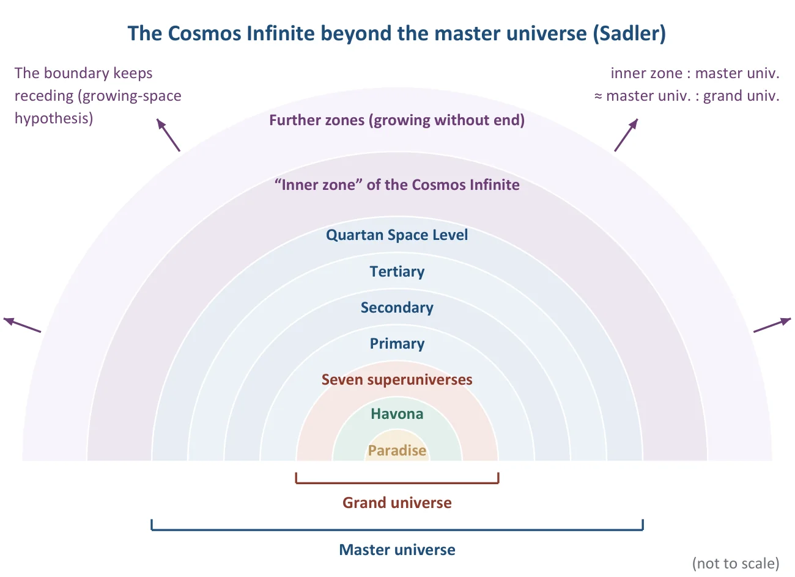

Original : Annexe XXI, Le concept du Cosmos Infini (p. 437–444)
Le Livre d’Urantia enseigne que l’espace s’étend au-delà du bord extérieur du maitre univers. Sadler appelle Cosmos Infini la création sans limites qui se déploiera un jour là-bas, et il montre d’abord que cette idée a un point d’appui dans le texte. Il examine ensuite comment elle pourrait commencer, comment elle peut se concilier avec un espace fini, ce qui manquera à ses natifs, et la pensée que Havona y est déjà préparé.
La carte cosmique du Livre d’Urantia est simple. Le Paradis se trouve au centre, Havona l’entoure, et les sept superunivers entourent à leur tour Havona. Ensemble, ils forment le grand univers ; si l’on ajoute les quatre niveaux d’espace extérieur, l’ensemble est le maitre univers. L’espace, cependant, s’étend encore plus loin.
Cet espace pénétré s’étend horizontalement vers l’extérieur, depuis la proximité du Paradis périphérique à travers le quatrième niveau d’espace extérieur et au-delà de la périphérie du maitre univers ; mais de combien au-delà, nous ne le savons pas.11:7.4
Sadler voit dans cet espace plus lointain le site d’un futur univers sans fin. Havona, le premier univers, se tient au centre comme création de l’éternité ; le dernier univers se situerait à la périphérie comme création de l’infinité. Si Havona incarne l’idée de la perfection existentielle, le Cosmos Infini incarne l’idée de la perfection existentielle-expérientielle.
Sadler insiste sur le fait que ce n’est pas une vaine fantaisie et rassemble des passages pour l’étayer. Le plus direct concerne la triunité de l’infinité énergétique.
Existentiellement présent dans cette triunité se trouve le potentiel énergétique du cosmos-infini, dont le grand univers et le maitre univers ne sont que des manifestations partielles.104:4.26
La révélation dit aussi que les Architectes du Maitre Univers perçoivent une relation avec quelque chose de plus grand [106:7.7], décrit le niveau coabsolu comme un champ d’expression « dépassant le maitre univers » [106:0.7], et rapporte l’opinion selon laquelle la pleine expression de l’Infini exige une scène infinie.
Ils postulent donc une création additionnelle et non révélée au-delà du quatrième et extrême niveau de l’espace extérieur, la possibilité d’un univers d’infinité, toujours croissant et ne finissant jamais.12:1.16
Sur ce fondement, Sadler pose une création sans fin qui encercle le maitre univers tout entier. Elle a un bord intérieur, mais pas de frontière extérieure, un commencement, mais pas d’achèvement. Ses zones concentriques toujours plus grandes accompliront chacune leur destinée, mais le Cosmos Infini dans son ensemble ne sera jamais achevé.
Dans le Livre d’Urantia, le mot en minuscules et avec trait d’union cosmos-infini (cosmos-infinite) est moins le nom d’une création particulière qu’une manière hypothétique de désigner le cosmos illimité qui s’étend au-delà du maitre univers (106:6.3). Sadler l’écrit avec des majuscules, Cosmos Infini (Cosmos Infinite), et en fait le nom propre d’un univers final. Ce livre emploie la forme de Sadler quand il parle de son concept et celle du texte quand il cite la révélation ; l’idée qu’il s’agit d’une création unique et définie doit être retenue comme une interprétation de Sadler.
Havona est apparu en même temps que l’Esprit Infini. Suivant cette analogie, Sadler suggère que le Cosmos Infini pourrait apparaitre pour la première fois lorsque le Suprême et l’Ultime trinitiseront Dieu l’Absolu. Il y a toutefois une différence. Havona est apparu d’un seul coup et dans sa totalité, tandis que le Cosmos Infini ne ferait que sa première apparition. Havona est une quantité fixe ; le Cosmos Infini ne l’est pas.
L’Être Suprême et Dieu l’Ultime embrassent respectivement tout le pouvoir physique évolué et tout le pouvoir physique transcendantal. Sadler imagine que, lorsque les deux s’uniront dans un acte de trinitisation, le niveau matériel lui aussi en résonnera, et que la « zone intérieure » du domaine périphérique de l’infinité pourrait se matérialiser soudainement.
Même cette zone intérieure serait presque inconcevable. Sadler suggère qu’elle pourrait dépasser le maitre univers d’un facteur aussi grand que celui par lequel le maitre univers dépasse le grand univers. Et ce serait la plus petite région du Cosmos Infini.

Une réelle difficulté surgit ici, car la révélation déclare clairement que l’espace n’est pas infini.
L’espace n’est pas infini, bien qu’il tienne son origine du Paradis ; il n’est pas absolu, car il est pénétré par l’Absolu Non Qualifié.12:5.2
Elle dit aussi que les zones de quiétude de l’espace intermédiaire finissent par envelopper tout l’espace [11:7.3]. Si l’espace est le contenant du mouvement, la résistance au mouvement devrait croitre près de son bord, ne laissant aucune place à l’activité créative. Comment un univers sans limites peut-il tenir dans un espace qui a des limites ?
Sadler examine trois possibilités pour le volume de l’espace. Si le volume était constant, l’espace serait une quantité finie, ce qui s’accorde mal avec la description que le texte en donne comme absolument ultime.
En apparence, l’espace est absolument ultime.118:3.5
Un volume qui diminue ne conviendrait pas à une création en expansion. Il ne reste que l’idée d’un volume de l’espace en augmentation. La révélation dit que l’espace est un don du Paradis et semble prendre son origine juste au-dessous du bas Paradis [11:2.11] ; Sadler lit dans l’expression « prenne son origine » un processus toujours en cours.
Si l’espace est une quantité en croissance constante, il a une frontière extérieure à tout moment donné, mais, au moment suivant, cette frontière se trouve plus loin. La frontière n’a d’emplacement que dans le temps, jamais dans l’éternité. Tant que l’espace croit plus vite que la création, il ne peut jamais enfermer un univers potentiellement infini. Sadler trouve cette idée compatible avec la respiration de l’espace [11:6.4] : l’alternance de l’inspiration et de l’expiration de l’espace ressemble à des vagues qui montent et descendent sur une marée qui avance régulièrement. C’est une inférence de Sadler, construite en réunissant plusieurs données textuelles ; la révélation elle-même n’enseigne pas que l’espace est en expansion.
Sadler revient sur le principe de l’annexe XI selon lequel les besoins d’un univers extérieur élargissent la fonction d’un univers intérieur. En donnant, Havona dépasse sa limitation originelle d’univers simplement parfait.
Le principe se répète à trois reprises.
| Stade du besoin | Ce qui manque aux bénéficiaires | Qui donne |
|---|---|---|
| Besoin post-Havona | La perfection divine inhérente | Êtres du Paradis et de Havona → ascendeurs des superunivers |
| Besoin post-suprême | L’expérience finie | Êtres du grand univers → citoyens de l’espace extérieur |
| Besoin post-ultime | L’expérience finie et absonite à la fois | Citoyens du maitre univers achevé → natifs du Cosmos Infini |
Les natifs du Cosmos Infini commenceront leur existence sur un certain niveau coabsolu dès le tout début, sans aucune expérience finie ou absonite.
Sadler admet que de tels mots n’ont presque aucun sens pour nous, mais il dit que le principe peut être « ressenti » dans la vie de Jésus. De même qu’un Être parfait est venu parmi des humains imparfaits et a partagé avec eux la perfection divine, nous partagerons un jour ce que nous possédons avec les citoyens des univers extérieurs et, dans un avenir plus lointain encore, avec eux, avec les natifs du Cosmos Infini.
Sadler met le dernier univers en regard du premier. Puisque Havona a toujours existé, son plan originel doit déjà avoir anticipé les besoins futurs du Cosmos Infini. Il associe des passages du texte à ses propres inférences ; ces associations peuvent se résumer comme suit.
| Ce que le texte dit de Havona | L’inférence de Sadler |
|---|---|
| Capacité de servir d’univers éducatif pour tous les types d’êtres passés, présents et futurs [14:6.41] | Il est déjà prêt à recevoir les natifs du Cosmos Infini |
| Ni fini ni absolu ; il fonctionne comme un transcendantal sans en être un [105:7.2] | Il est apte à accueillir des êtres de n’importe quel univers |
| Sa classification de la vie inclut l’absonite, l’ultime, le coabsolu et l’absolu [14:4.1] | Les niveaux fonctionnels des natifs du Cosmos Infini existent déjà dans l’univers central |
| Il s’y passe des choses que le mental créé ne peut comprendre [14:6.5] | Il est déjà pourvu pour les évènements futurs les plus lointains |
Sadler conclut la comparaison dans le langage de la thèse et de la synthèse. Havona se présente comme une thèse existentielle, une thèse de perfection absolue, posée par le Père Universel et le Fils Éternel et complétée par l’apparition de l’Acteur Conjoint. Par contraste, le Cosmos Infini serait une thèse expérientielle, une thèse de perfection coabsolue, que posent le Suprême et l’Ultime et qui est mise en mouvement par la trinitisation de Dieu l’Absolu. Le premier et le dernier s’emboitent selon le même schéma.